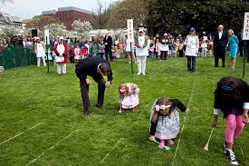
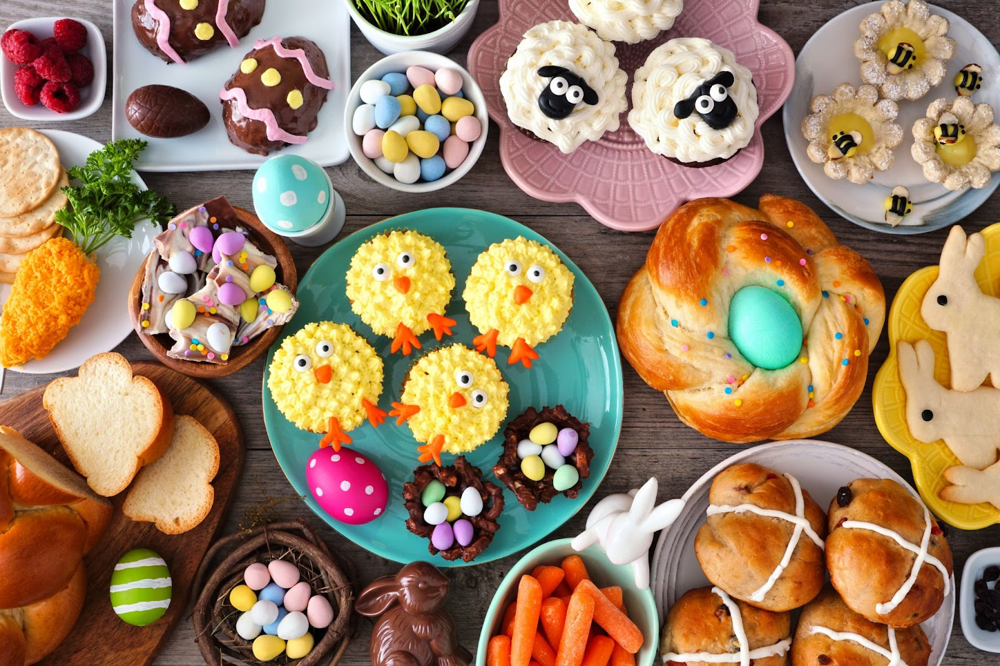
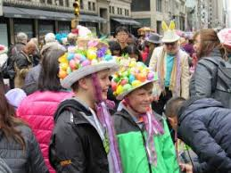

Pratos Típicos
Uma tradição é o jantar de Páscoa. As pessoas se reúnem com a família ou amigos para jantar. A festa é regada de delícias, assim como no Brasil, porém os pratos são outros. Alguns pratos típicos são:
Presunto assado no forno com uma marinada picante.
Cordeiro assado
Hot Cross Buns, um tipo de pão doce que é tradicionalmente consumido na Sexta-feira Santa, mas também povoam pratos no jantar de Páscoa.
Sweet egg bread, que na tradução é pão doce de ovo. Um pão assado com um ovo cozido no meio da massa, com casca e tudo.
Ovos cozidos pintados de várias cores.
Batatas e legumes, como em todos os acompanhamentos de todas as datas comemorativas. Quais vegetais serão e se serão cozidos, assados ou em forma de purê, varia de família para família.
Bolo Simnel, um bolo de frutas de receita britânica, mais tradicional em New England.
Biscoitos de Páscoa, também de receita britânica.
Brincadeiras
Caça aos ovos com o Coelhinho da Páscoa
Como em muitos outros países, o “Coelhinho da Páscoa” esconde ovos cozidos coloridos e doces para crianças, pelos gramados, jardins e cantos das casas.
Isso acontece no domingo de Páscoa. As famílias escondem ovos de plástico cheios de doces ou guloseimas, ovos cozidos pintados, ou mesmo ovinhos de chocolate para que as crianças possam encontrar.
Easter Egg Roll
Outra brincadeira tradicional é o Easter Egg Roll, algo como o rolamento dos ovos de páscoa, é uma corrida de ovos cozidos. Cada criança escolhe um ovo e simultaneamente, todas rolam seus ovos ladeira abaixo, na torcida de que o seu seja o vencedor.
Desfile de Páscoa em Nova York
Outra tradição muito diferente é o desfile de Páscoa. A cidade de Nova York é o destino de muitos turistas de todo o país nessa data por causa do seu extravagante desfile na Quinta Avenida.
No desfile e no Bonnet Festival, que acontece ao mesmo tempo, o que mais importa é o seu chapéu, quanto maior, mais colorido, mais chamativo e extravagante, melhor. Essa tradição parece ter origens no costume cristão de usar roupas novas após os sacrifícios da Quaresma. Ou seja, se na missa, aos domingos, o costume era usar as suas melhores roupas, na Páscoa, para celebrar a ressurreição de Cristo, o seu melhor tinha que ser “melhor do melhor”.
Dessa forma, os chapéus foram ganhando cada vez mais destaque até chegar onde estamos hoje.